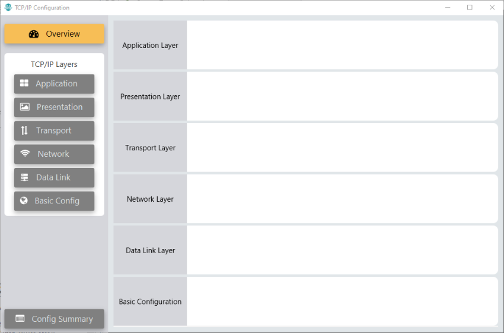

2.7 Adding and Configuring TCP/IP Stack to Project
- Open TCP/IP Configuration from the Plugins drop-down on the Project Graph window.
Figure . Open TCPIP Configuration - This will open an empty TCP/IP Configuration window, as seen on the figure.
Figure . Empty TCPIP Configuration Window  Add TCP/IP Components to Configuration.
- Click on Basic Config button on the left panel.
Figure . Basic Config - Add TCPIP CORE component.
Figure . Add TCPIP CORE Component 
- Click on Data Link button on the left panel.
Figure . Data Link - Add G3ADPMAC component.
Figure . Add G3ADPMAC Component - Add a new Network Interface.
Figure . Add Network Interface - Link G3ADPMAC and Network Interface components.
Figure . Link Components - Click on Network button on the left panel and add IPv6, ICMPv6 and NDP components.
Figure . Add Network Components - Click on Transport button on the left panel and add UDP component.
Figure . Add UDP Component - Click on Overview button on the left panel and verify that all components are correctly added.
Figure . Verify Components Close TCP/IP Configuration window.
At this point, close MCC and re-open it again. This will auto configure some of the TCP/IP options during MCC start-up, since G3ADPMAC component is linked to it.
Configure TCP/IP Components.
- Double-click on TCP/IP STACK Folder in Project Graph.
Figure . Open TCPIP Stack Folder - This opens the TCP/IP Components view. Double-click on BASIC CONFIGURATION folder.
Figure . Open Basic Configuration Folder - Click on TCPIP CORE component, on Configuration Options set values to match the following figure (Note: some of them are autoconfigured when G3ADPMAC Component is linked to Network Interface):
Figure . Configure TCPIP CORE - Double-click on DATA LINK LAYER folder.
Figure . Open Data Link Layer Folder - Click on NETCONFIG component, on Configuration Options set values to match the following figure (Note: some of them are autoconfigured when G3ADPMAC Component is linked to Network Interface):
Figure . Configure NETCONFIG Instance - Double-click on NETWORK LAYER folder.
Figure . Open Network Layer Folder - IPv6 and NDP components are autoconfigured, as seen on the figures.
Figure . IPv6 Autoconfigured 
Figure . NDP Autoconfigured - Double-click on TRANSPORT LAYER folder.
Figure . Open Transport Layer Folder - Click on UDP component, on Configuration Options set Maximum number of Sockets to 1, as G3 does not use more. (Note: some of them are autoconfigured when G3ADPMAC Component is linked to Network Interface):
Figure . UDP Configuration
- After TCP/IP Configuration, go back to Root view on Project Graph window and select System component. Configure the Heap Size as seen on the figure to allocate the memory that was previously configured for the TCP/IP Stack.
Figure . Configure System Heap Size